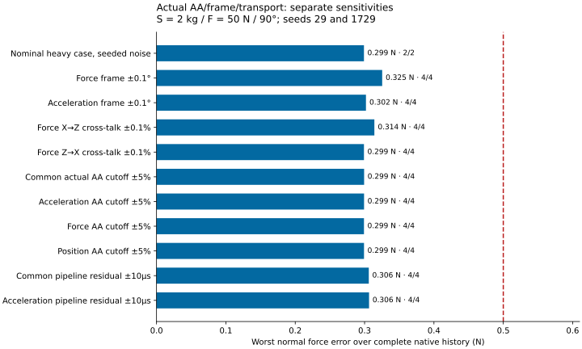
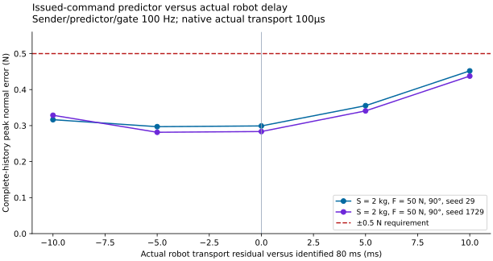
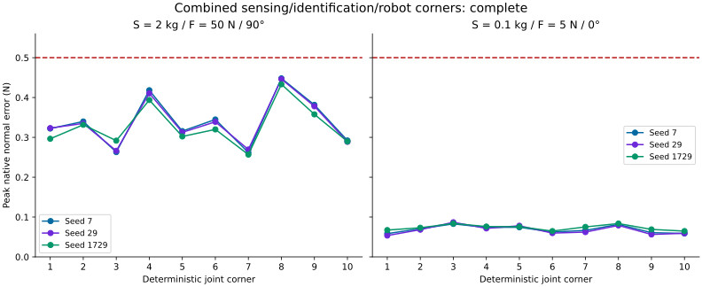
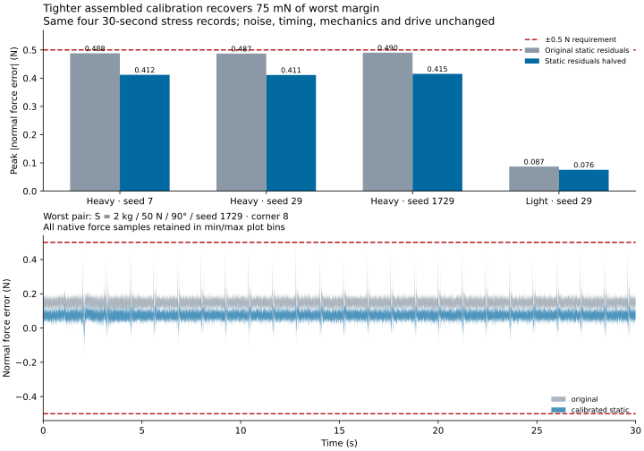

124 uncertainty histories executed; 124 pass, 0 fail, 0 rejected. Six separate software-proof recordings demonstrate bitwise unity and Normal/Accelerator parity for two configurations.
Separate sensitivities are not combined tolerances. Joint corners are a finite two-endpoint sample; they do not establish every 26-dimensional tolerance combination or full-range joint uncertainty. No physical prototype has been validated by these recordings.
| Cohort | Status | Executed/planned | Pass | Fail | Rejected |
|---|---|---|---|---|---|
| sensing_OAT | complete | 42/42 | 42 | 0 | 0 |
| robot_OAT | complete | 14/14 | 14 | 0 | 0 |
| joint_budget | complete | 60/60 | 60 | 0 | 0 |
| joint_long | complete | 4/4 | 4 | 0 | 0 |
| calibrated_static_long | complete | 4/4 | 4 | 0 | 0 |





The four paired30-second stress records halve exactly16 static calibration residuals while holding noise, actual/identified AA, timing, robot mismatch, mechanics, controller and100µs drive response unchanged. They improve the worst peak from0.490396N to0.415311N. The resulting0.084689N margin belongs to those four finite stress records; it is not a refined full-range uncertainty grid or a demonstrated installed-hardware accuracy.
Sensor response and issued-motion prediction use separate actual and identified coefficients. Raw noise PSD normalization remains tied to the nominal AA chain when actual cutoff varies. Sensor static tare and transfer-function initial states use the calibrated sensor frame; the physical starting current always uses actual plant masses and force constant.
The selected final candidate keeps 100µs current response and 24V. Its approximate 20mm spring metadata is recorded separately from the 18.1mm metadata used by the initial sensing proofs; physical force dynamics are identical. Native full traces, exact hashes, failed runs and packing audits are linked through the machine-readable evidence.